- 01接收路径到达统计与组帧
- 02时序路径估计目标延迟
- 03播放路径跨流同步与输出
目标读者：已理解 RTP/RTCP 与基本播放概念、正在实现 SFU/录制/播放侧缓冲的 C++ 工程师。
前置假设：读者知道 RTP 时间戳、RTCP SR 的 NTP↔RTP 锚点作用，以及 Jitter 的直观含义。
与前几章关系：第五、六章讲“是什么”，第七章讲视频接收组帧/依赖/FrameBuffer 数据面；本章讲收包之后如何用控制面 + 数据面把网络抖动与声画同步同时解决，并给出可落地的工程折中。
1. Why：为什么“固定等 500ms”与“两路各管各的”会同时失败
工程里常见两类方案，各自只解决一半问题。
固定等待（例如死等 500ms）
- 网络好时：纯浪费延迟，录制/连麦体验变差。
- 网络差时：仍可能花屏、断音，因为突发抖动分布的尾部远非一个常数能覆盖。
两路媒体各做 JitterBuffer、但不做统一时间基与统一目标
- 音频与视频的“播放游标”不在同一根时间轴上比较，同步策略只能拍脑袋加延迟或丢包。
- 更隐蔽的问题：若 RTP→NTP 只在第一次 RTCP SR 建锚，长时间运行下发送端时钟漂移、SR 四舍五入与重传等会引入慢漂移，声画会越差越远。
因此，“自适应”不是把 500 改成 300，而是引入一组明确的反馈量：抖动导致的排队延迟目标、跨媒体对齐所需的额外延迟、以及在消费者节拍上执行的追赶 / 等待 / 填补策略。
2. WebRTC 在做什么：先把名词对齐
WebRTC 音频 NetEq 一侧与视频接收流水线一侧都围绕同一个概念：目标排队延迟 target_delay（实现里常以 packet 数或毫秒等价表示）。先牢牢记住一条工程级公式心智（与“相加”完全不同）：
$$ \text{target_delay} = \max(\text{base_from_jitter},\ \text{minimum_delay},\ \text{preferred_delay}) \quad [\text{再与 maximum_delay 做 clamp}] $$
为什么必须是 max？
- 抖动缓冲需求：要把绝大多数包的随机迟到吸收在队内，表现为一定的基准排队深度
base_from_jitter。 - 音视频同步需求：若某一侧必须“再多等一会儿”才能与另一侧对齐，这层诉求通过
minimum_delay（以及上层注入的 sync 语义）进来；它不是与抖动叠加的第二桶水倒进同一个桶，而是同一桶水位至少要涨到“更高的那一道刻度”。把两边相加会系统性地过缓冲，延迟虚高。
在 WebRTC 的实践中，同步侧想拉高的那部分额外排队时间，会作为 minimum_delay（或等价接口）送入 NetEq，从而进入上面的 max 组合（可与 NetEq 的网络统计模块输出的基准延迟共同决策）。
音频 NetEq（典型调用：modules/audio_coding/neteq，文档可见仓库内 docs/neteq.md）的数据面特征：
| 维度 | 要点 |
|---|---|
| 驱动方式 | 音频设备/ADM 周期性拉取（例如 10ms 一帧） |
| 能否“暂无输出” | 不行。若无包，必须 PLC / 拉伸填补，否则就有间断噪声或爆音风险 |
| 追赶/等待 | 变速：Accelerate（压缩波形片段）、Expand（拉伸）、以及融合类操作；PLC 与 codec 能力结合 |
视频侧（modules/video_coding 等路径）的数据面特征：
| 维度 | 要点 |
|---|---|
| 驱动方式 | 解码/渲染流水线拉取；可有“还不到时间”的等待 |
| 能否返回空 | 可以（黑屏、重复上一帧由上层策略决定） |
| 追赶/等待 | 离散决策：hold、丢非关键帧追赶、等关键帧恢复；不做连续时间伸缩 |
跨媒体的控制面（概念上对应 stream_synchronization / RtpStreamsSynchronizer 一类职责）：周期或事件触发，读取测量，向音频侧下发最小延迟、向视频侧调整渲染/释放时机等——只改“目标”，不替代各 buffer 内部的逐帧判断。
3. 设计框架：三条路径（WebRTC 思想的抽象）
把系统拆成三条解耦路径，职责就不会搅成一团浆糊。

查看图解源文本
flowchart LR
subgraph arrival["到达路径 arrival"]
RTP[RTP 到达] --> Sort[排序/去重/乱序恢复]
Sort --> Depack[组帧/解码候选]
Depack --> Stat[抖动统计更新]
Stat --> Q[内部队列/候选帧挂起]
end
subgraph slow["慢环控制 slow sync"]
SR[RTCP SR] --> TB[RTP↔NTP 锚点更新]
TB --> MEAS[读取播放参考游标]
MEAS --> ADJ[计算 audio/video sync_delay]
ADJ --> SET[SetMinimumDelay / SetSyncDelay]
end
subgraph pull["拉取路径 pull"]
TIC[混音/渲染节拍] --> OUT[TryPull / GetAudio]
OUT --> PLC[音频: 正常/加速/拉伸/PLC]
OUT --> VID[视频: hold/drop/关键帧]
end
Q --> OUT
SET --> Q
到达路径只做：完整性、统计量、绝不在此刻决定“现在该不该播”。
慢环只做：相对漂移、同步附加延迟、平滑与限速。
拉取路径才结合：target_delay、当前缓冲深度、帧可解码性，决定本次输出。
这与“混流录制”场景下的边界一致：混流引擎只负责按自己的节拍拉音频/视频，复杂 RTP 策略应留在 worker 侧（参见你们设计文档中对 mixlib 的职责裁剪）。
4. 关键要点（检查清单）
4.1 时间基：谁在统一两根 RTP 时间轴
- 用 RTCP SR 提供的
(ntp_timestamp, rtp_timestamp)建锚点；每次 SR 刷新锚点，长录制下可减少只靠首次 SR 的漂移风险。 - 任意 RTP 时间戳先 unwrap（32 位回绕），再映射到同一 NTP 轴：
$$\text{ntp_ms} \approx \text{sr_ntp_ms} + (\text{rtp_unwrapped} - \text{sr_rtp_unwrapped}) \times 1000 / \text{clock_rate}$$
4.2 缓冲深度：必须用媒体时钟，而不是“到达时刻差”
队列覆盖的媒体时长应近似为：
$$\text{depth_ms} \approx \frac{\text{rtp_newest} - \text{rtp_oldest}}{\text{clock_rate}} \times 1000$$
用“最新到达 wallclock − 最早到达 wallclock”当深度，会在网络延迟波动时严重误判（资料里把这点列为已踩坑项）。
4.3 抖动样本：到达间隔减去媒体间隔
对相邻合法包：
$$\text{jitter_sample} = \max\left(0,\ \Delta t_{\text{arrival}} - \Delta t_{\text{media}}\right)$$
再对样本做滑动统计（均值、方差、分位数等），用于估计 jitter_delay。这与 RFC 3550 对抖动的精神一致，也与工程上“吸收迟到需要多大排队”的目标一致。
4.4 同步测量：比较的是“播放游标”，不是“最新收包”
控制面应读取：
- 音频：已经输出到播放链路上的 RTP 时间游标（含 PLC 推进）。
- 视频：下一帧可输出的候选 RTP 时间游标（或等价的 playout 参考）。
否则同步延迟会被短期突发到达扰动，产生错误干预。
4.5 音频连续性优先、视频离散追赶
- 音频：少做跳采样式“跳帧”，优先 加速消耗（压缩）或 扩展（拉伸）与 PLC；WebRTC 走向是通过 DSP 类操作维持连贯。
- 视频：允许 丢非关键帧、等待关键帧；这是与音频完全不同的纠错语法。
5. 算法谱系（从“可用”到“接近 WebRTC”）
| 层级 | 简化实现（录制/工程友好） | WebRTC 级实现 |
|---|---|---|
| 抖动估计 | 滑动窗口 + 方差/分位数 + base + k·√Var |
DelayManager 等与 NetEq 深度耦合的统计与滤波 |
| 目标延迟平滑 | 每次调整上限 ±5~10ms，避免跳变 | 与 packet 时钟对齐的更细致策略 |
| 音频追赶 | 重复最后一帧 PLC、轻量 resample 变速 | WSOLA、Accelerate/Expand、Merge 等 |
| 视频追赶 | 缓冲比 + hold/drop 决策 | 明确 render_time、参考 FrameBuffer 调度 |
| A/V 同步 | 慢环 500ms~1000ms + join 事件 bootstrap | RtpStreamsSynchronizer + 与 NetEq/VideoReceiveStream 协作 |
“最好”不是一味照搬 WebRTC 的全部 DSP，而是：控制面公式与分层与 WebRTC 对齐；数据面按你的延迟预算、CPU 预算与质量底线选型。
6. C++ 伪代码：端到端骨架
下列代码只表达控制流与职责边界，省略线程安全与细枝末节。
6.1 收包与抖动样本（到达路径）
struct PacketSample {
int64_t rtp_ts_unwrapped{};
int64_t recv_wallclock_ms{};
};
class JitterDelayEstimator {
public:
void OnPacket(const PacketSample& cur, const PacketSample& prev) {
if (!prev_valid_) { prev_ = cur; prev_valid_ = true; return; }
const double arrival_delta_ms = cur.recv_wallclock_ms - prev.recv_wallclock_ms;
const double media_delta_ms =
(cur.rtp_ts_unwrapped - prev.rtp_ts_unwrapped) * 1000.0 / clock_rate_hz_;
const double jitter_sample_ms = std::max(0.0, arrival_delta_ms - media_delta_ms);
variance_tracker_.Push(jitter_sample_ms); // 例如 Welford 或滑动窗口方差
prev_ = cur;
}
int EstimatedDelayMs() const {
const double v = variance_tracker_.Variance();
const double sqrt_v = std::sqrt(std::max(0.0, v));
int delay_ms = static_cast<int>(base_delay_ms_ + jitter_factor_ * sqrt_v);
return std::clamp(delay_ms, min_delay_ms_, max_delay_ms_);
}
private:
int clock_rate_hz_{90000};
int base_delay_ms_{30};
double jitter_factor_{3.0};
int min_delay_ms_{20};
int max_delay_ms_{400};
PacketSample prev_{};
bool prev_valid_{false};
// VarianceTracker variance_tracker_;
};
6.2 目标延迟：抖动 vs 同步（核心公式）
int TargetDelayMs(int jitter_delay_ms,
int minimum_delay_ms_from_user,
int sync_delay_ms,
int maximum_delay_ms) {
// WebRTC 常见语义：sync 通过 minimum_delay 路径叠加进来
const int minimum_delay_ms = std::max(minimum_delay_ms_from_user, sync_delay_ms);
int target_ms = std::max(jitter_delay_ms, minimum_delay_ms);
return std::min(target_ms, maximum_delay_ms);
}
6.3 慢环：从统一到 NTP 的偏差到双侧延迟（控制面）
struct SyncReferenceState {
bool active{false};
bool has_reference{false};
int64_t reference_rtp_ts_unwrapped{0};
int64_t current_delay_ms{0};
};
struct StreamTimingContext {
bool has_anchor{false};
int64_t sr_ntp_ms{0};
int64_t sr_rtp_unwrapped{0};
int clock_rate_hz{48000};
int64_t ToNtpMs(int64_t rtp_unwrapped) const {
return sr_ntp_ms + (rtp_unwrapped - sr_rtp_unwrapped) * 1000 / clock_rate_hz;
}
};
struct SyncAdjustment {
int audio_sync_delay_ms{0};
int video_sync_delay_ms{0};
};
class AvSyncControllerSlowLoop {
public:
void Tick(const SyncReferenceState& audio,
const SyncReferenceState& video,
const StreamTimingContext& audio_timing,
const StreamTimingContext& video_timing) {
if (!audio.active || !video.active || !audio.has_reference || !video.has_reference) {
audio_sink_.SetSyncDelayMs(0);
video_sink_.SetSyncDelayMs(0);
return;
}
const int64_t audio_ntp = audio_timing.ToNtpMs(audio.reference_rtp_ts_unwrapped);
const int64_t video_ntp = video_timing.ToNtpMs(video.reference_rtp_ts_unwrapped);
const int64_t relative_delay_ms = video_ntp - audio_ntp; // >0 表示视频偏“前”
SyncAdjustment adj = ComputePolicy(relative_delay_ms); // 阈值 + 限速 + 平滑
audio_sink_.SetSyncDelayMs(adj.audio_sync_delay_ms);
video_sink_.SetSyncDelayMs(adj.video_sync_delay_ms);
}
private:
SyncAdjustment ComputePolicy(int64_t relative_delay_ms) {
SyncAdjustment o;
// 示例策略（需按产品容忍度调参）：
// - 视频领先：增大 video_sync_delay（视频侧多等）
// - 视频落后少量：让视频追赶（video_sync_delay -> 0，配合丢帧）
// - 视频长期落后：逐步增加 audio_sync_delay（给视频恢复空间），避免无限丢帧
(void)relative_delay_ms;
return o;
}
struct {
void SetSyncDelayMs(int) {}
} audio_sink_, video_sink_;
};
6.4 音频拉取：以 target 为参考的闭环（数据面）
class AdaptiveAudioJitterBufferPull {
public:
bool PullPcmFrame(/*out*/ PcmFrame& out) {
const int jitter_delay_ms = estimator_.EstimatedDelayMs();
const int target_ms =
TargetDelayMs(jitter_delay_ms, minimum_delay_ms_, sync_delay_ms_, max_delay_ms_);
const int current_ms = CurrentBufferDepthMs(); // 口径：RTP 覆盖的媒体时长优先
const int error_ms = current_ms - target_ms;
if (current_ms == 0 && HasPlcReference()) {
out = RepeatLastPcm(); // PLC：极简可用方案
AdvancePlayCursor();
return true;
}
if (error_ms > drop_threshold_ms_) {
return AccelerateConsume(out); // 简化：合并更多采样到更短时间窗；WebRTC 用 WSOLA 等
}
if (error_ms < -hold_threshold_ms_) {
return PreemptiveExpand(out); // 简化：重复/插入过渡帧；WebRTC 用 Expand
}
return NormalPop(out);
}
private:
JitterDelayEstimator estimator_;
int minimum_delay_ms_{0};
int sync_delay_ms_{0};
int max_delay_ms_{400};
int drop_threshold_ms_{20};
int hold_threshold_ms_{20};
};
6.5 视频拉取：离散决策（数据面）
class AdaptiveVideoJitterBufferPull {
public:
const VideoFrame* PullNextFrameOrHold() {
const int jitter_delay_ms = estimator_.EstimatedDelayMs();
const int target_ms =
TargetDelayMs(jitter_delay_ms, minimum_delay_ms_, sync_delay_ms_, max_delay_ms_);
const int current_ms = CurrentBufferDepthMs();
const int error_ms = current_ms - target_ms;
if (!HasDecodableFrame()) {
return nullptr; // 等关键帧/等组装，不是 PLC 伪造画面
}
if (error_ms < -hold_threshold_ms_) {
return nullptr; // hold：先不放行
}
if (error_ms > drop_threshold_ms_) {
DropExpiredNonKeyFrames();
}
return PopNextDecodableFrame();
}
private:
JitterDelayEstimator estimator_;
int minimum_delay_ms_{0};
int sync_delay_ms_{0};
int max_delay_ms_{400};
int drop_threshold_ms_{30};
int hold_threshold_ms_{30};
};
7. Trade-offs：如何为你的工程“刻意简化”而不翻车
| 决策 | 何时值得做 | 代价与坑 |
|---|---|---|
target_delay = max(jitter, sync) |
几乎总是 | 若误用相加，延迟不可控地膨胀 |
| 缓冲深度用 RTP 时长 | 任何严肃实现 | 用 wallclock 会误判“队列有多满” |
| 音频 PLC 用重复最后一帧 | CPU 紧、先求稳 | 音色机械；长时间丢包会露馅 |
| 音频追赶不上 WSOLA | 质量优先 | CPU 与复杂度显著上升 |
| 视频用缓冲状态机而非 render_time | 录制时间轴不强绑 wallclock | 与实时预览的时序模型不一致时要分流 |
| 慢环 1000ms + 事件 bootstrap | 大规模录制/混流 | 纯 1000ms 会让首帧对齐偏钝 |
一句话：WebRTC 的“最好”是分层清晰 + 目标延迟合并语义正确 + 音/视频用各自语法纠错；你的“最好”是在这三件事不打折扣的前提下，替换表格里每一行的具体算法档位。
8. 结论
- 网络抖动与声画同步共同决定播放侧排队目标；WebRTC 用
target_delay的 max 语义把两类诉求折叠进同一套目标水位，而不是简单相加。 - 控制面只同步慢变量并下发
sync_delay/minimum_delay；数据面在拉取节拍上完成音频变速与 PLC、视频 hold/drop/关键帧恢复。 - 工程落地时，优先保证：RTP 深度口径正确、时间基可刷新、播放游标测量正确；再按需替换音频 DSP 与视频调度强度。
更深入的视频组帧与 FrameBuffer 调度请继续读第七章；声画生理容忍与 NTP 对齐基础请回看第六章。